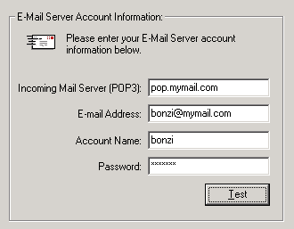
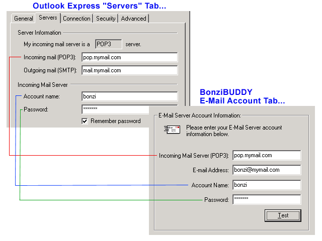

Hold down Control (CTRL) and press "D" to bookmark this page for future reference!
BonziBUDDY™ E-Mail Reader Module The BonziBUDDY E-Mail Reader is an add-on module for BonziBUDDY that will allow BonziBUDDY™ to read your e-mail messages to you! With this module installed, Bonzi will check your mail server for new messages and, if found, will tell you that you have mail waiting and ask you if you want him to read the message(s). How does the
E-Mail Reader module work? The E-mail Reader module works like a trimmed-down e-mail program. You set up the information for your POP3 mail server, e-mail address, account name, and password on the BonziBUDDY options screen. Once this information is entered correctly, Bonzi will check the mail server at regular intervals (you can set Bonzi to check for new mail as often as you wish). If a new message is found, Bonzi will tell you the subject of the message, when it was sent, and who it was sent from, and ask you if you would like him to read it for you.
Does the BonziBUDDY™ E-Mail Reader module have any special requirements? This module will work with any POP3 compatible mail server that allows you to use any third-party mail program you wish, such as Outlook Express, Eudora, or Netscape Messenger. In order for Bonzi to be able to see your mail messages, the message must still be on the mail server. Any message that has already been downloaded to your mail program cannot be read by BonziBUDDY. The E-Mail Reader module should be compatible with almost any local home-town Internet service provider and probably will not be compatible with most FREE Internet service providers or web-based e-mail services.
Is the E-Mail Reader module compatible with America Online (AOL)? Unfortunately, America Online does not allow third party mail programs like Outlook Express or the BonziBUDDY™ E-Mail Reader to see into their mail servers. Their mail servers are not compatible with the POP3 protocol that is required for the E-Mail Reader to work. The same holds true for most web-page e-mail accounts (Hotmail.com, Email.com, etc.) and other closed Internet services like Lycos, Juno, or MSN Internet.
How do I respond to an e-mail message that BonziBUDDY reads to me? The BonziBUDDY™ E-Mail Reader will only read messages to you. It does not have a feature to help you respond to messages. Since this is the case, after using the E-Mail Reader you will still need to download your messages to Outlook Express, Netscape Messenger, or whatever e-mail program you use. You will need to use your regular e-mail program to reply to or forward any messages that you are sent. How do I set
up the E-Mail Reader? Set up of the E-Mail Reader module is easy. Just open BonziBUDDY™, click on him once to open the Bonzi World screen, and click on the Options button. In the options window, go to the E-Mail Account tab. It should look like this:  Incoming Mail Server (POP3): – This is the name of your ISP's POP3 mail server. You can find this address in the properties of your regular e-mail program, on the page that shows the server settings. This is always in the form XXX.mymail.com, where mymail.com is usually the same domain name that is after the @ sign in your e-mail address. The XXX is usually something like mail, pop, pop3, etc. E-Mail Address: – This is your regular e-mail address, in the form name@domain.com. Account Name: – This is the "username" or "log on" that you use with your ISP. This is usually the same "username" that you use in your modem settings when you first dial up your ISP for Internet access. It is also usually the part of your e-mail address before the @ sign. If your e-mail address were to be bonzi@mymail.com your account name would probably be bonzi. Password: – This is your ISP log in or mail account log in password. This is usually case-sensitive, so make sure that you are entering the password exactly as you would when you are logging into your ISP or your mailbox. Test Button: - This button will test your set up information to see if it seems correct. Click on this button and Bonzi will tell you whether or not your account information is set up properly. How do I ask BonziBUDDY™ to check my mailbox? That's easy! Just click on the image of a mailbox from the Bonzi World screen and choose "Check our mailbox..." You can also right-click on Bonzi, go to Email, and click on "Check our mailbox..." Bonzi will query your mail server for new messages any time you do this.
How do I change the time interval at which Bonzi checks my mailbox? To change the e-mail checking interval, click on Bonzi to open the Bonzi World screen. Click on the Options button, and go to the E-Mail Interval tab. On this tab, just enter the time, in minutes, that you would like to make the E-Mail Interval.
How do I transfer my settings in Outlook Express to the settings for the E-Mail Reader module? You can't automatically transfer your regular e-mail program settings to the E-Mail Reader's settings tab, but you can do this manually. Any e-mail program you use will have an "options" or "preferences" section that holds the server settings for your mail server. In the image below, we show which settings in Outlook Express should be copied to the BonziBUDDY™ E-Mail Account settings. Open Outlook Express, click on the Tools menu, and go to Accounts. On the Mail Accounts tab, double click on your ISP mail account to open the Options screen, and go to the Servers tab. Also click on Bonzi to open the Bonzi World screen, click on the Options button, and look at the E-Mail Account tab. When both of these settings screens are open, transfer the information from Outlook Express to the E-Mail Account tab, as shown below:  If you have any further questions about this product or need technical help, please visit us on the web at http://www.bonzi.com/support/bb4support.htm. We look forward to hearing from you! Sincerely, The
BONZI Software Customer Support Team |